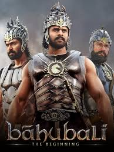

movie list

interstellar
cast :
Matthew McConaughey,Anne Hathaway,Jessica Chastain,John Lithgow ,Michael Caine,Casey Affleck
about :
When Earth becomes uninhabitable in the future, a farmer and ex-NASA pilot, Joseph Cooper, is tasked to pilot a spacecraft, along with a team of researchers, to find a new planet for humans.

Bahubali
cast :
Prabhas ,Rana Daggubati,Anushka Shetty,Sathyaraj,Ramya Krishnan,Tamannaah Bhatia
about :
In the kingdom of Mahishmati, while pursuing his love, Shivudu learns about the conflict ridden past of his family and his legacy. He must now prepare himself to face his newfound arch-enemy.

Game of thrones
cast :
Sean Bean,Michelle Fairley,Richard Madden,Sophie Turner,Maisie Williams,Isaac Hempstead-Wright,Kit Harington,john Bradley,James Cosmo
about :
A Game of Thrones takes place over the course of one year on or near the fictional continent of Westeros. The story begins when King Robert visits the northern castle Winterfell to ask Ned Stark to be his right-hand assistant, or Hand of the King.

jersey
cast :
Shraddha Srinath,Nani,Ronit Kamra,Sanusha,Harish Kalyan
about :
Arjun, a talented but failed cricketer, decides to return to cricket in his late thirties, driven by the desire to represent the Indian cricket team and fulfil his son's wish for a jersey as a gift.